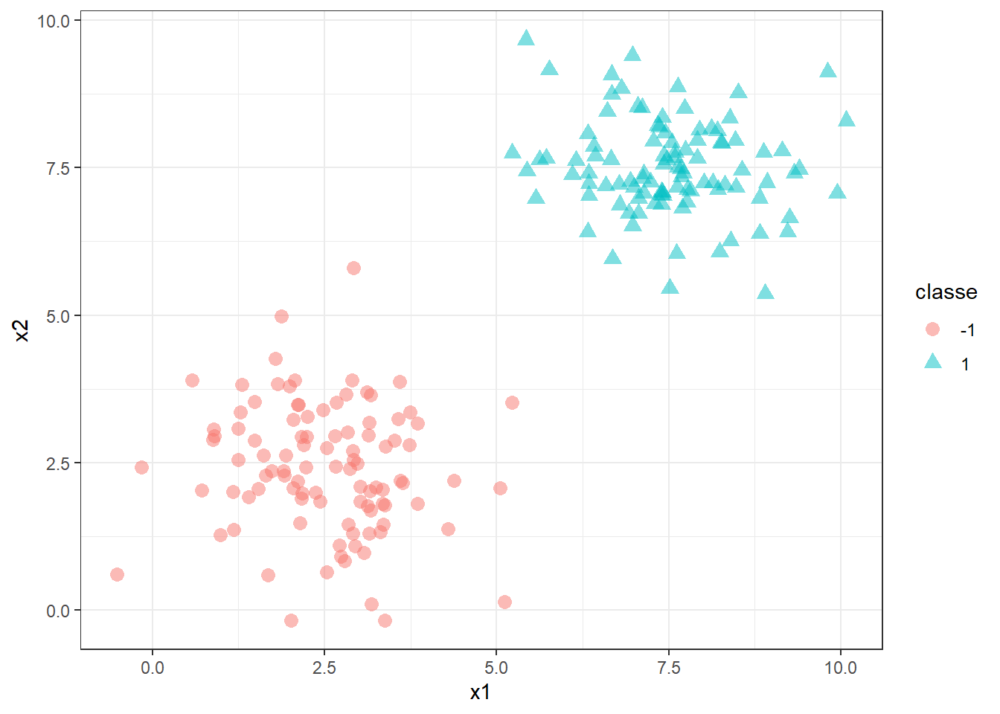
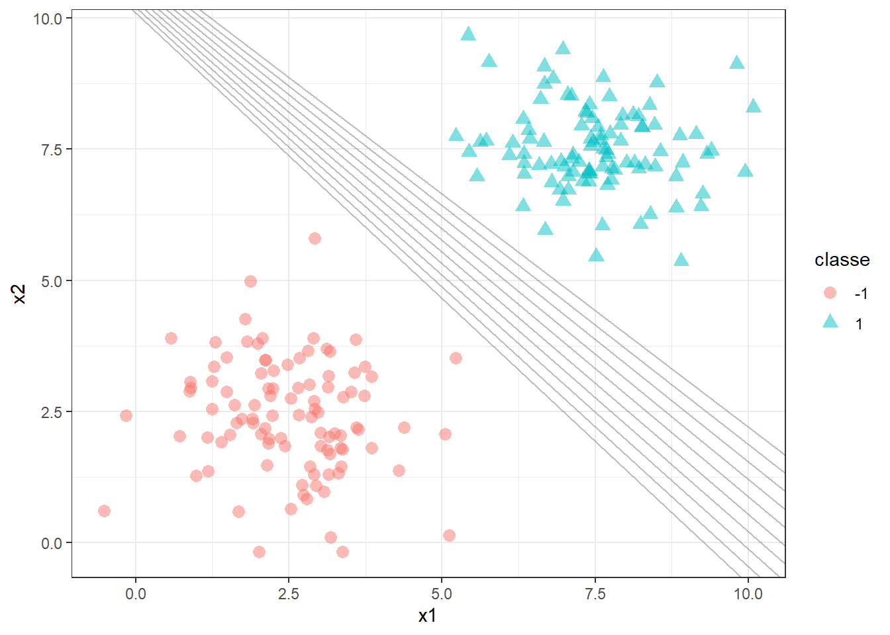
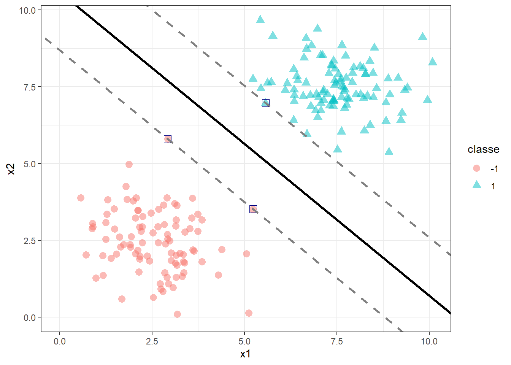
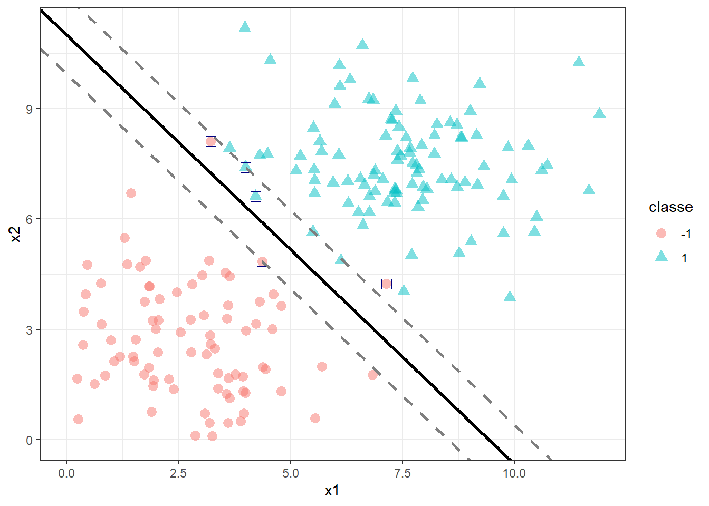
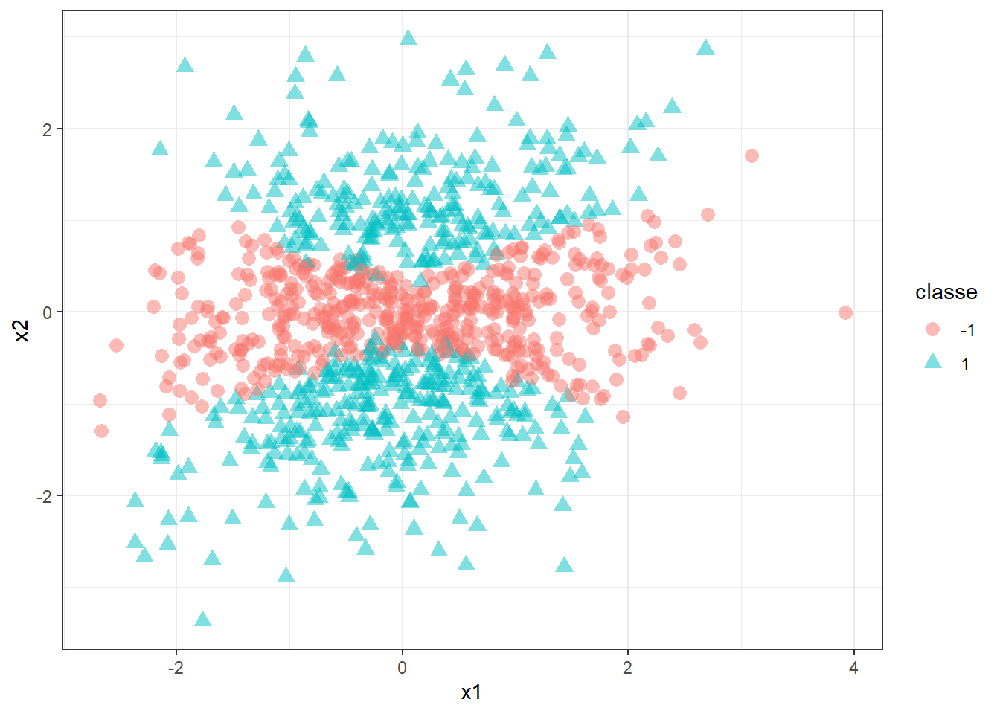
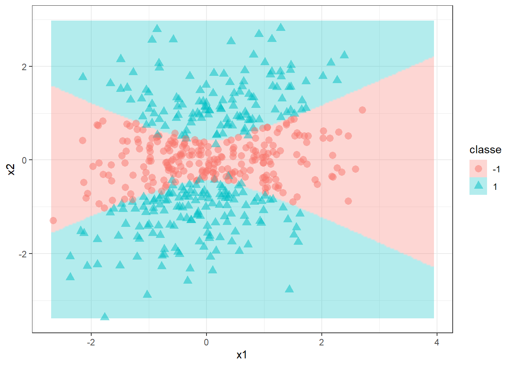
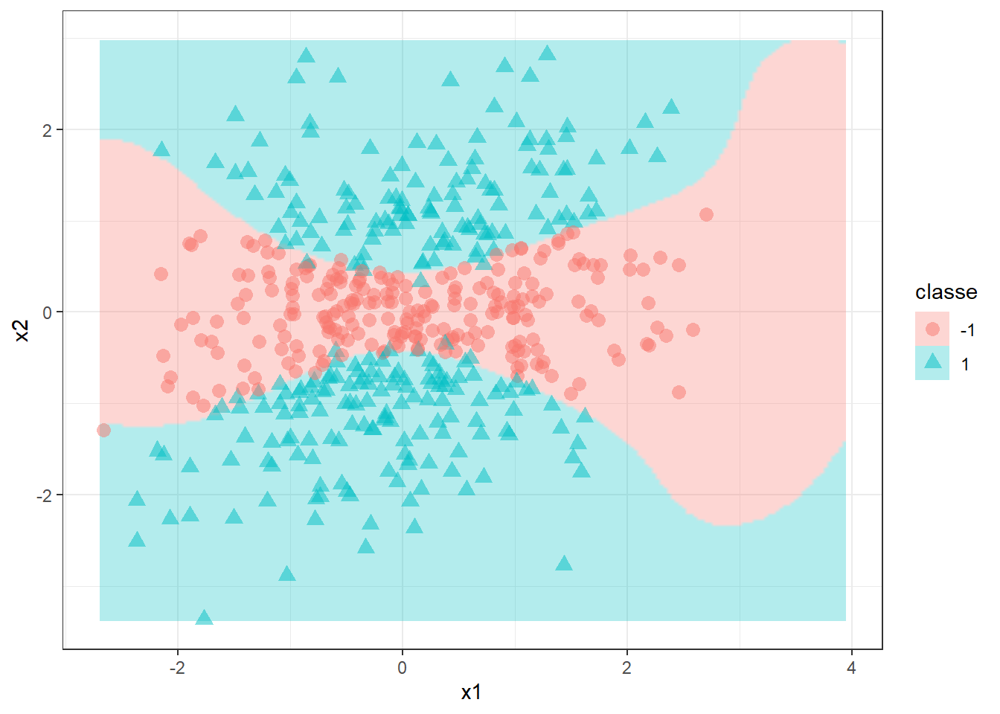

Máquinas de vetores de suporte
Máquinas de vetores de suporte
Classificador de máxima margem
Seja um problema de classificação binária, \(y=\{-1,1\}\) em função de duas variáveis regressoras, \(\mathbf{x}=[x_1,x_2]^T\), conforme ilustrado abaixo.
Deseja-se encontrar um classificador, ou hiperplano, que separe tais observações de forma perfeita. Tal hiperplano pode ser representado matematicamente por \(b+\mathbf{w}^T\mathbf{x}=0\). Para \(k=2\), o separador consiste em uma linha, \(b+w_1x_1+w_2x_2 = 0\). Existem infinitas soluções para o problema ilustrado, no qual as classes são ditas perfeitamente separáveis, conforme ilustrado a seguir.

A regra de classificação usando um hiperplano que faz a classificação sem erros é descrita a seguir: \[ \begin{align} \text{Se: } b+w_1x_1+w_2x_2>0 \text{, Então: } y=+1 \\ \text{Se: } b+w_1x_1+w_2x_2<0 \text{, Então: } y=-1 \\ \end{align} \]
Logo, pode-se garantir que, para qualquer observação \(y_i\) de interesse \(y_i(b+w_1x_1+w_2x_2)>0\), de forma que sempre seja realizada a classificação correta.
Para garantir a obtenção deste hiperplano, usa-se o conceito de máxima margem. O separador de máxima margem é ilustrado em linha contínua a seguir. A distância entre ele e as linhas tracejadas paralelas é o que se denomina de margem. Os pontos que se distanciam do hiperplano com distância igual à margem são os vetores de suporte, sendo destacados com quadrado azul. Considerando a margem com comprimento unitário, \(M=1\), pode-se dizer que \(b+w_1x_1+w_2x_2 = 1\), para os pontos que coincidem com a margem superior, enquanto \(b+w_1x_1+w_2x_2 = -1\), para os pontos que interceptam a margem inferior.

Logo, para casos perfeitamente separáveis não há sequer um ponto que satisfaça \(b+w_1x_1+w_2x_2=0\), porém todos os pontos satisfazem: \[ \begin{align} \text{Se: } b+w_1x_1+w_2x_2\geq 1 \text{, Então: } y=+1 \\ \text{Se: } b+w_1x_1+w_2x_2\leq-1 \text{, Então: } y=-1, \\ \end{align} \] de forma que \(y_i(b+w_1x_1+w_2x_2)\geq1\).
Para encontrar tal hiperplano, busca-se maximizar a margem. Para tal maximização, pode-se considerar a diferença da projeção dos vetores de suporte, no vetor dos coeficientes, \((\mathbf{w}^T\mathbf{x}_a - \mathbf{w}^T\mathbf{x}_b)/||\mathbf{w}|| = 2/||\mathbf{w}||\), onde \(||\mathbf{w}||\) é o comprimento vetorial ou norma de \(\mathbf{w}\), \(||\mathbf{w}||=\sqrt{w_1^2+w_2^2}\). Logo, o problema a ser resolvido pode ser formulado como segue.
\[ \begin{aligned} \text{Max } & \begin{Bmatrix} \frac{2}{||\mathbf{w}||} \end{Bmatrix} \\ \textrm{s.t.: } & \begin{matrix} y_i(\mathbf{w}^T\mathbf{x}_i + b) \geq 1, \forall i=1,...,N\\ \end{matrix} \end{aligned} \]
Tal problema é análogo à seguinte formulação. O quadrado da norma facilita a otimização, garanindo a convexidade da função a ser minimizada. \[ \begin{aligned} \text{Min } & \begin{Bmatrix} \frac{||\mathbf{w}||^2}{2} \end{Bmatrix} \\ \textrm{s.t.: } & \begin{matrix} y_i(\mathbf{w}^T\mathbf{x}_i + b) \geq 1, \forall i=1,...,N\\ \end{matrix} \end{aligned} \]
Classificador de vetores de suporte
Para casos não perfeitamente separáveis, pode-se permitir que a restrição que até então garantia a classificação perfeita seja violada. Abaixo ilustra-se um caso não perfeitamente separável, já com o classificador de vetores de suporte plotado. Pode-se observar que para a classe +1 todos os pontos foram classificados de forma correta, porém ao menos um deles ficou dentro da margem. Já para a classe -1, dois pontos foram classficados incorretamente, sendo um dentro e outro para além da margem oposta.

Para resolver o problema de classificação de forma a obter tal classificador de vetores de suporte, resolve-se o problema a seguir, onde \(\xi_i\) consiste em variáveis de folga que permitem violar a margem e também a classificação correta, de forma que se \(\xi_i = 0\), os pontos são classificados corretamente, se \(\xi_i \leq 1\), a observação está dentro da margem, porém se \(\xi_i > 1\) o ponto está além da margem e classificado erroneamente. Pode-se observar que foi somado um termo na função objetivo o qual viabiliza minimizar a soma dos termos que violam as margens, \(\sum_i\xi_i\). O parâmetro \(C\) determina o equilíbrio entre a maximização da margem e a minimização dos erros de classificação.
\[ \begin{aligned} \text{Min } & \begin{Bmatrix} \frac{||\mathbf{w}||^2}{2} + C\sum_i\xi_i \end{Bmatrix} \\ \textrm{s.t.: } & \bigg\{ \begin{matrix} y_i(\mathbf{w}^T\mathbf{x}_i + b) \geq 1 - \xi_i, \forall i=1,...,N\\ \xi_i \geq0 \end{matrix} \end{aligned} \]
Máquinas de vetores de suporte
Imagine um caso de classificação onde uma fronteira linear acarretará em baixo desempenho, conforme o ilustrado à seguir. Neste caso, a não lineariedade dos dados exige a aplicação de um separador mais flexível.

Para construir tal classificador, seja a função lagrangeana correspondente à formulação do classificador de vetores de suporte, a qual comporta objetivos e restrições em uma única função. \[ L=\frac{||\mathbf{w}||^2}{2} + C\sum_i\xi_i - \sum_i\alpha_i(y_i(\mathbf{w}^T\mathbf{x}_i + b) - 1 + \xi_i) -\sum_i\beta_i\xi_i\text{ ,} \] onde \(\alpha_i\) e \(\beta_i\) são os multiplicadores de Lagrange, \(\alpha_i \geq0\) e \(\beta_i\geq0\) , \(i=1,...,N\). Para resolver tal problema deve-se derivar tal função em relação aos parâmetros do modelo e igualar a zero, isto é: \[ \begin{align} \frac{\partial L}{\partial \mathbf{w}} &= \mathbf{w} - \sum_i\alpha_iy_i\mathbf{x}_i = 0 \\ \frac{\partial L}{\partial b} &= \sum_i\alpha_iy_i =0 \\ \frac{\partial L}{\partial \xi_i} &=C- \alpha_i - \beta_i= 0 \text{, } \forall i=1,...,N \\ \end{align} \]
Logo: \[ \begin{align} \mathbf{w} &= \sum_i\alpha_iy_i\mathbf{x}_i \\ \sum_i\alpha_iy_i &=0 \\ \alpha_i + \beta_i&=C \text{, } \forall i=1,...,N \\ \end{align} \]
Substituindo tais resultados na função lagrangeana, pode-se formular o problema dual, conforme segue. \[ \begin{aligned} \text{Max } & \begin{Bmatrix} \sum_i\alpha_i -\frac{1}{2}\alpha_i\alpha_jy_iy_j\mathbf{x}_i^T\mathbf{x}_j \end{Bmatrix} \\ \textrm{s.t.: } & \bigg\{ \begin{matrix} \sum_iy_i\alpha_i=0\\ 0\leq\alpha_i\leq C \text{, } \forall i=1,...,N \end{matrix} \end{aligned} \]
A resolução do problema dual em si apenas facilita a otimização dos parâmetros do modelo. Entretanto, é necessário algo mais para obtenção de classificadores que se adaptem a dados não lineares. Para tal, usa-se o chamado truque de kernel. O modelo apresentado inicialmente, \(b+\mathbf{w}^T\mathbf{x}=0\) pode ser escrito considerando os multiplicadores de lagrange conforme segue: \[ \sum_i\alpha_iy_i\mathbf{x}_i^T\mathbf{x} + b \]
Para obter modelos mais flexíveis pode-se substituir a função linear dos vetores de suporte, \(\mathbf{x}_i^T\mathbf{x}\) por uma função mais complexa ou kernel, \(k(\mathbf{x}_i,\mathbf{x})\). A seguir são apresentadas algumas opções de kernel.
\[ \begin{align} \text{linear} &: k(\mathbf{x}_i,\mathbf{x}) = \mathbf{x}_i^T\mathbf{x} \\ \text{polinomial} &: k(\mathbf{x}_i,\mathbf{x}) = (\mathbf{x}_i^T\mathbf{x}+1)^d \\ \text{radial} &: k(\mathbf{x}_i,\mathbf{x}) = exp(-\gamma||\mathbf{x}-\mathbf{x}_i||^2) \end{align} \]
Obviamente é importante considerar o kernel já na otimização, de forma que os hiperparâmetros específicos destes também sejam selecionados adequadamente segundo os dados. Para o exemplo plotado anteriormente, utilizando um kernel polinomial e metade das observações para treino, obtém-se o classificador plotado a seguir com os dados remanescentes.

Para o mesmo exemplo, o kernel radial resulta no classificador plotado a seguir.
